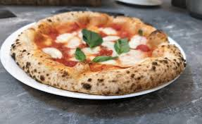
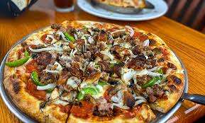
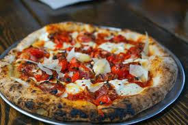
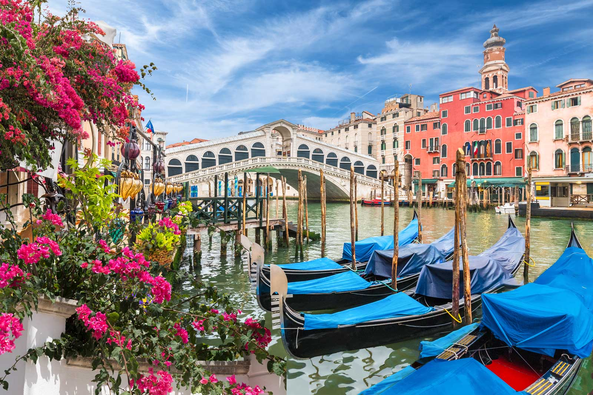
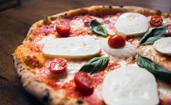

Naples

Naples is one of the most beautiful cities in Italy. It is home to the famous Neopolitan pizza. In fact, the original pizza as we know it, was first popularized here in Naples. The popular pizza of choice
Neopolitan
Neapolitan pizza is a traditional Italian pizza from Naples, characterized by a soft, thin, chewy crust with a puffy, charred edge (cornicione). It's cooked quickly at very high temperatures (around 900°F) in a wood-fired oven, using simple, high-quality ingredients like San Marzano tomatoes, fresh mozzarella (fior di latte or buffalo mozzarella), fresh basil, and olive oil. The two classic variations are the Margherita (with cheese) and the Marinara (without cheese).


Pizzarias in Naples:


Da Michele Shop Adress:
Via Cesare Sersale
1-80139, Napoli
Phone number:39-0815539204